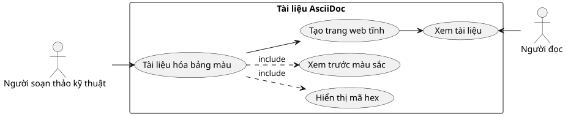
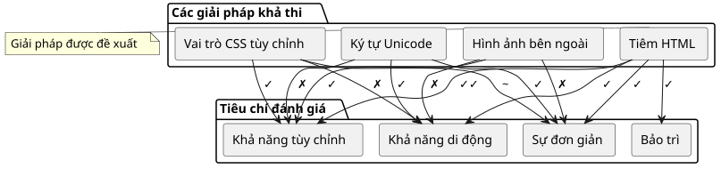
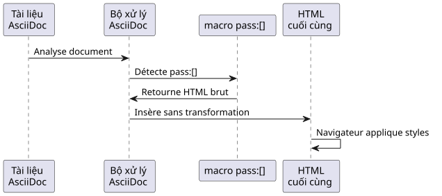
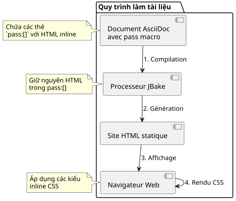

Hiển thị các ô màu trong AsciiDoc: Hướng dẫn thực hành
Đăng ngày 01 November 2025
Giới thiệu
Khi soạn thảo tài liệu kỹ thuật, đặc biệt là đối với các hướng dẫn về phong cách hoặc đặc tả giao diện người dùng, việc phải hiển thị các bảng màu là điều thường gặp. AsciiDoc, dù rất mạnh mẽ cho việc làm tài liệu, nhưng không cung cấp cú pháp gốc để hiển thị các mẫu màu. Bài viết này khám phá vấn đề đó và đề xuất một giải pháp tinh tế dựa trên việc chèn HTML.
Vấn đề đặt ra
Ngữ cảnh sử dụng
Hãy tưởng tượng bạn đang lập tài liệu cho các biến CSS của một chủ đề ứng dụng web. Bạn cần:
-
Liệt kê các mã màu hex
-
Hiển thị bản xem trước trực quan của mỗi màu sắc
-
Duy trì khả năng đọc của tài liệu nguồn
-
Đảm bảo khả năng tương thích với các trình tạo trang tĩnh như JBake

Các cách tiếp cận khả thi
Có nhiều giải pháp có thể được xem xét để hiển thị màu sắc trong một tài liệu AsciiDoc:

Tùy chọn 1 : Ký tự Unicode
Việc sử dụng các ký tự Unicode như`■`(■) đơn giản nhưng bị hạn chế:
* ■ --accent-color: #7952b3 (violet Bootstrap)Hạn chế : Không kiểm soát được màu sắc, phụ thuộc vào phông chữ hệ thống.
Tùy chọn 2: Hình ảnh bên ngoài
Tạo hình ảnh PNG hoặc SVG cho mỗi màu:
* image:colors/violet.svg[width=16] --accent-color: #7952b3Hạn chế: Bảo trì nặng nề, gia tăng số lượng tệp, không có đồng bộ hóa tự động.
Tùy chọn 3: Các vai trò CSS tùy chỉnh
Định nghĩa các lớp CSS và áp dụng chúng thông qua các vai trò AsciiDoc:
* [.color-violet]##■## --accent-color: #7952b3Hạn chế : Yêu cầu một trang stylesheet bên ngoài, định nghĩa trước tất cả các màu sắc có thể có.
Tùy chọn 4: Injection HTML (giải pháp được chọn)
Sử dụng macro``để chèn HTML với các style inline:
* pass:[<span style="display:inline-block;width:1em;height:1em;
background:#7952b3;vertical-align:middle;margin-right:0.5em"></span>]
--accent-color: #7952b3 (violet Bootstrap)Giải pháp: HTML Injection với `
Nguyên lý hoạt động
Macro``của AsciiDoc cho phép chèn nội dung thô mà sẽ không được xử lý bởi bộ xử lý AsciiDoc. Điều này cho phép chúng ta chèn trực tiếp HTML với các kiểu CSS inline.

Triển khai
Đây là cấu trúc HTML cần chèn vào:
<span style="display:inline-block;
width:1em;
height:1em;
background:#7952b3;
vertical-align:middle;
margin-right:0.5em">
</span>Giải thích các thuộc tính CSS
| Thuộc tính | Hàm |
|---|---|
|
Cho phép xác định |
|
Kích thước ô vuông tương ứng với kích thước phông chữ (responsive) |
|
Màu cần hiển thị (thay đổi tùy theo nhu cầu của bạn) |
|
Căn chỉnh hình vuông với văn bản liền kề |
|
Khoảng cách giữa hình vuông và văn bản |
Ví dụ đầy đủ
Dưới đây là một ví dụ tài liệu về bảng màu chủ đề:
== Thème Clair
* pass:[<span style="display:inline-block;width:1em;height:1em;background:#f8f9fa;border:1px solid #ccc;vertical-align:middle;margin-right:0.5em"></span>] --bg-primary: `#f8f9fa` (blanc cassé)
* pass:[<span style="display:inline-block;width:1em;height:1em;background:#212529;vertical-align:middle;margin-right:0.5em"></span>] --text-primary: `#212529` (noir très foncé)
* pass:[<span style="display:inline-block;width:1em;height:1em;background:#7952b3;vertical-align:middle;margin-right:0.5em"></span>] --accent-color: `#7952b3` (violet Bootstrap)
* pass:[<span style="display:inline-block;width:1em;height:1em;background:#61428f;vertical-align:middle;margin-right:0.5em"></span>] --accent-hover: `#61428f` (violet plus foncé)
* pass:[<span style="display:inline-block;width:1em;height:1em;background:#ffffff;border:1px solid #ccc;vertical-align:middle;margin-right:0.5em"></span>] --card-bg: `#ffffff` (blanc)Kết quả ra như sau:
Chủ đề Sáng
-
--bg-primary:`#f8f9fa`(trắng kem)
-
mật khẩu:[<span style="display:inline-block;width:1em;height:1em;background:#212529;vertical-align:middle;margin-right:0.5em"></span>] --text-primary:`#212529`(đen rất đậm)
-
--accent-color:`#7952b3`(Bootstrap màu tím)
-
--accent-hover:`#61428f`(tím đậm hơn)
-
--card-bg:`#ffffff`(trắng)
Tối ưu hóa và các thực hành tốt nhất
Quản lý các màu sáng
Đối với các màu rất sáng (trắng, xám rất nhạt), hãy thêm một đường viền để làm cho chúng hiển thị rõ trên nền trắng:
<span style="display:inline-block;width:1em;height:1em;
background:#ffffff;border:1px solid #ccc;
vertical-align:middle;margin-right:0.5em"></span>Đường viền màu xám (border:1px solid #ccc) cho phép phân định hình vuông màu trắng trên một nền trắng.
Điều chỉnh kích thước các ô vuông
Bạn có thể điều chỉnh kích thước của các ô vuông tùy theo nhu cầu:
* pass:[<span style="display:inline-block;width:1.5em;height:1.5em;background:#7952b3;vertical-align:middle;margin-right:0.5em"></span>] Grand carré
* pass:[<span style="display:inline-block;width:0.8em;height:0.8em;background:#7952b3;vertical-align:middle;margin-right:0.5em"></span>] Petit carréViệc sử dụng đơn vị`em`đảm bảo rằng các ô vuông sẽ tự điều chỉnh theo kích thước phông chữ.
Tạo các biến thể
Cho các nhu cầu cụ thể, bạn có thể tạo các hình dạng khác nhau:
Hình tròn đầy màu sắc
* pass:[<span style="display:inline-block;width:1em;height:1em;background:#7952b3;border-radius:50%;vertical-align:middle;margin-right:0.5em"></span>] Cercle violetHình vuông với viền màu
* pass:[<span style="display:inline-block;width:1em;height:1em;background:#ffffff;border:3px solid #7952b3;vertical-align:middle;margin-right:0.5em"></span>] Bordure violetteKiến trúc giải pháp

Ưu điểm và hạn chế
Ưu điểm
-
✓ Tính tự chủ: Không phụ thuộc vào các tệp bên ngoài
-
✓ Khả năng di động: Hoạt động với tất cả các bộ xử lý AsciiDoc
-
✓ Đồng bộ hóa: Mã màu nằm trực tiếp trong HTML
-
✓ Linh hoạt: Tùy chỉnh hoàn toàn phong cách
-
✓ Bảo trì : Chỉnh sửa đơn giản mã hexadécimal
-
✓ Tương thích JBake: Hoạt động hoàn hảo với các trình tạo trang web tĩnh
Hạn chế
-
✗ Độ dài : Mã HTML lặp lại trong nguồn AsciiDoc
-
✗ Khả năng đọc của nguồn : Tài liệu nguồn ít tinh gọn hơn
-
✗ Khả năng tiếp cận: Không có văn bản thay thế mặc định (cần thêm thủ công)
Cải thiện khả năng truy cập
Để làm cho các ô vuông có thể truy cập được đối với trình đọc màn hình:
* pass:[<span role="img" aria-label="Couleur violet Bootstrap"
style="display:inline-block;width:1em;height:1em;background:#7952b3;
vertical-align:middle;margin-right:0.5em"></span>]
--accent-color: `#7952b3` (violet Bootstrap)Các thuộc tính`role="img"` et `aria-label`cho phép các công nghệ hỗ trợ hiểu và mô tả nội dung hình ảnh.
Ví dụ cụ thể: Tài liệu về chủ đề
Dưới đây là một ví dụ đầy đủ tài liệu hóa nhiều chủ đề:
= Guide des couleurs de l'application
== Thème Clair (`:root`)
* pass:[<span style="display:inline-block;width:1em;height:1em;background:#f8f9fa;border:1px solid #ccc;vertical-align:middle;margin-right:0.5em"></span>] --bg-primary: `#f8f9fa` (blanc cassé)
* pass:[<span style="display:inline-block;width:1em;height:1em;background:#212529;vertical-align:middle;margin-right:0.5em"></span>] --text-primary: `#212529` (noir très foncé)
* pass:[<span style="display:inline-block;width:1em;height:1em;background:#7952b3;vertical-align:middle;margin-right:0.5em"></span>] --accent-color: `#7952b3` (violet Bootstrap)
== Thème Sombre (`[data-bs-theme="dark"]`)
* pass:[<span style="display:inline-block;width:1em;height:1em;background:#212529;vertical-align:middle;margin-right:0.5em"></span>] --bg-primary: `#212529` (noir très foncé)
* pass:[<span style="display:inline-block;width:1em;height:1em;background:#ffffff;border:1px solid #999;vertical-align:middle;margin-right:0.5em"></span>] --text-primary: `#ffffff` (blanc)
* pass:[<span style="display:inline-block;width:1em;height:1em;background:#0d6efd;vertical-align:middle;margin-right:0.5em"></span>] --accent-color: `#0d6efd` (bleu Bootstrap)
== Thème Contraste Élevé (`[data-bs-theme="high-contrast"]`)
* pass:[<span style="display:inline-block;width:1em;height:1em;background:#000000;vertical-align:middle;margin-right:0.5em"></span>] --bg-primary: `#000000` (noir)
* pass:[<span style="display:inline-block;width:1em;height:1em;background:#ffffff;border:1px solid #000;vertical-align:middle;margin-right:0.5em"></span>] --text-primary: `#ffffff` (blanc)
* pass:[<span style="display:inline-block;width:1em;height:1em;background:#00ff00;vertical-align:middle;margin-right:0.5em"></span>] --accent-color: `#00ff00` (vert vif)Kết luận
Tiêm HTML thông qua macro``của AsciiDoc cung cấp một giải pháp thanh lịch và thực tế để hiển thị các mẫu màu trong tài liệu kỹ thuật. Mặc dù hơi dài dòng, phương pháp này đảm bảo khả năng di động tối đa và bảo trì đơn giản.
Kỹ thuật này không yêu cầu bất kỳ cấu hình bên ngoài nào, không cần bảng kiểu bổ sung, và hoạt động ngay lập tức với JBake cũng như tất cả các trình xử lý AsciiDoc tiêu chuẩn.
Một khi bạn đã tạo được ô màu đầu tiên, bạn chỉ cần sao chép-dán mã HTML và thay đổi mã hex để nhanh chóng tạo ra một bảng màu đầy đủ.
Kỹ thuật này có thể được mở rộng cho các trường hợp sử dụng khác yêu cầu kết xuất trực quan tùy chỉnh: biểu tượng, huy hiệu, biểu đồ đơn giản, hoặc bất kỳ thành phần hình ảnh nào yêu cầu kiểm soát chính xác về kiểu dáng.
Tài nguyên
Bài viết được đăng ngày 2025-11-01